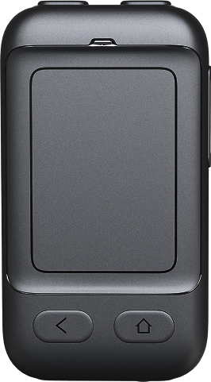
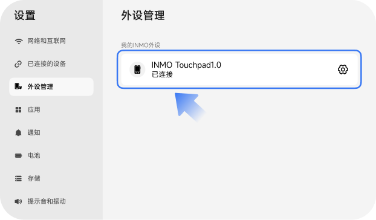
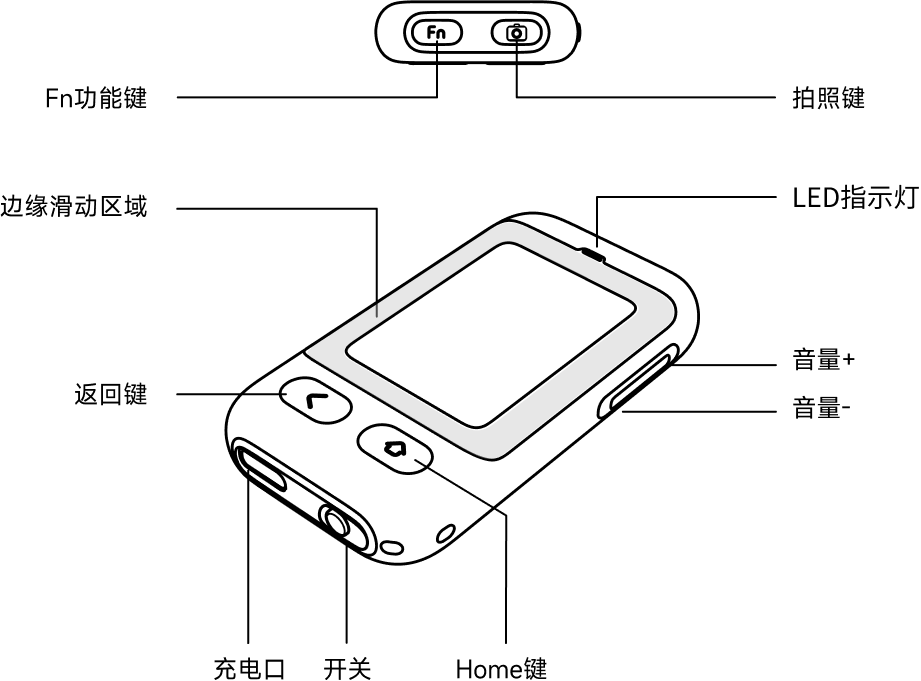
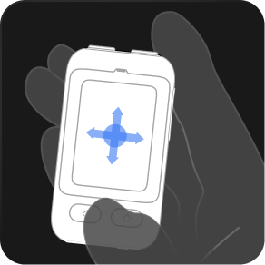
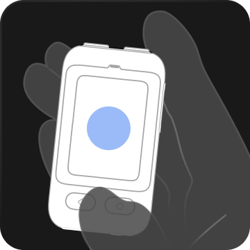
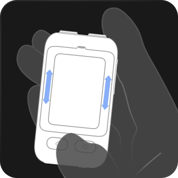
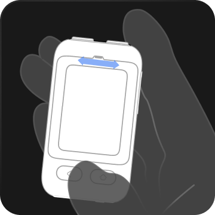
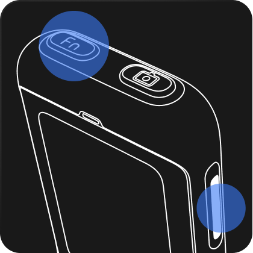
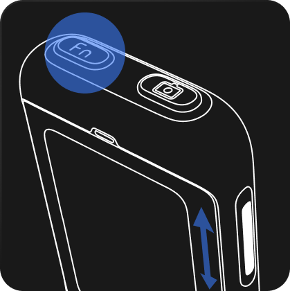

01.Touchpad1.0与眼镜连接
左推开关后蓝灯闪烁，设备自动进入配对模式

开关
打开【桌面】【外设管理】点击并搜索，即可发现"INMO Touchpad1.0"设备，点击连接即可。连接完成后显示"INMO Touchpad1.0"已连接


02.Touchpad1.0功能介绍
音量调节
侧边音量调节键调节音量
返回键
短按：返回上一层，或退出相机模式
Home键
短按：返回主界面
拍照键
单击：拍照
双击：在其他界面下，唤起相机；在相机界面下，切换拍照/录像功能。

03.Touchpad1.0功能介绍

中心范围内移动
移动光标

中心范围内单击
点击屏幕

侧边缘滑动
上下滑动页面/短视频上下切换

上边缘滑动
左右滑动页面/栏目左右切换

Fn+音量调节：
上一曲/下一曲

Fn+右侧边缘滑动：
调节亮度
单击Fn键：
熄屏/亮屏
Fn+拍照键：
播放/暂停音乐